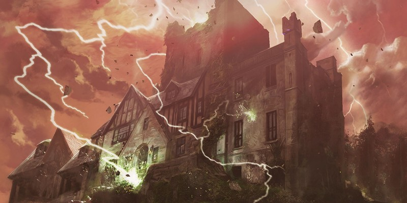

Histoire des Royaumes Oubliés
Présentation des derniers événements majeurs qui ont bouleversé les Royaumes Oubliés.
Le Temps des Troubles, 1358
Le Temps des Troubles coïncide avec la sortie d'AD&D 2 et permet d'expliquer des changements dans les règles du jeu, comme la révision de nombreux sorts.
Si AD&D 1 plaçait le début de la timeline des Royaumes Oubliés aux alentours de 1357 CV, AD&D 2 avançait l'histoire de 10 ans jusqu'en 1367 CV.
Le Temps des Troubles, aussi connu sous le nom de Guerre des Dieux ou de la Crise des Avatars, prend place durant l'année 1358 CV. Cette période commence lorsque les dieux Baine et Myrkul tentent de voler les Tablettes du Destin au dieu suprême, Ao. En colère contre les dieux à cause de leur perpétuelle volonté de pouvoir et de leur négligence envers leurs fidèles, le Seigneur Ao obligea alors tous les dieux à vivre parmi leurs suivants sur terre. Les effets immédiats de cette déclaration furent triples. En premier lieu, la magie divine cessa d'être. Deuxièmement, la magie des arcanes ne fut plus régulée par Mystra et devint dangereusement imprévisible. Enfin, les dieux, normalement immortels et distants, devinrent alors vulnérables aux côtés des peuples de Faerûn.
Le retour du Nétheril, 1374
La timeline de D&D 3 prenait pour année de départ l'an 1372 CV.
L'empire du Nétheril ressuscite en 1374 CV lorsque la cité flottante de Thultanthar, communément appelée Pénombre et de retour après une longue excursion dans la Gisombre de près de deux mille ans, plane au-dessus du désert d'Anauroch. Les nobles de la cité commencent alors presque immédiatement la chasse aux ruines et aux artefacts nétherisses, se préparant ainsi à la restauration de leur ancien grand empire.
La Magepeste, 1385
La Magepeste coïncide avec la sortie de D&D 4 et permet d'expliquer les changements radicaux dans les règles du jeu qu'a amenés cette version.
D&D 4 faisait un bond en avant de près d'un siècle et reprenait l'histoire en 1479 CV.
En 1385 CV, un déchaînement de magie sauvage connu sous le nom de Magepeste déchire Faerûn, provoqué par l'assassinat de Mystra des mains de Cyric et Shar. Avec la mort de la déesse de la magie, la Toile, la structure universelle de forces arcaniques, collapsa. D'immenses étendues de terre furent ravagées, des nations submergées, des régions entières s'effondrèrent dans l'Outreterre ou au contraire s'élevèrent sur des plateaux rocheux. Le monde prit une apparence encore plus magique et fantastique, avec notamment des masses de roche flottant dans les airs, que l'on a qualifiées d'îlots célestes. La Magepeste infecta tout : la chair, la pierre, la magie, l'espace et les frontières dimensionnelles, même la cosmologie. Mais la Magepeste fit également céder la frontière entre les deux mondes jumeaux d'Abeir et de Toril. Des régions de chacun de ces mondes échangèrent de places.
La Fracture, autour de 1487
La Fracture coïncide avec la sortie de D&D 5 et permet d'expliquer encore une fois les changements dans les règles du jeu, et en particulier le retour à un système de magie semblable à celui de D&D 3.
D&D 5 reprend les Royaumes en 1489 CV.
Les Royaumes Oubliés ont enchaîné les catastrophes les unes après les autres durant les derniers siècles, du Temps des Troubles jusqu'à la Magepeste. Chaque fois, cela a remodelé le panthéon, renversé des nations et des dirigeants, et même modifié la géographie du monde. Aujourd'hui, Faerûn est de nouveau secoué et remodelé… pour la dernière fois.
1482 CV. Le dieu du meurtre Bhaal renaît et réclame son domaine à Cyric.
1484 CV. Un tremblement de terre frappe la ville d'Iriaebor, et un fléau frappe Amn sous la forme d'essaims de criquets. La mer dans les régions du sud reprend sa place alors que les orcs de Many-Arrows attaquent les forteresses naines du Nord. Les dieux sont en ébullition par la promesse d'un nouveau panthéon et se démènent pour s’accrocher au pouvoir et cimenter leur position. Leurs agents mortels, les Élus, sont chargés de mener à bien leur volonté sur terre. La Sembie envahie les Vaux, poussant le Cormyr à lever une armée pour porter secours à son voisin. Le Nétheril envoie alors en réaction des forces à sa frontière, s'ouvrant un second front.
1485 CV. Les Élus de la déesse Aurile entrent en guerre contre Dix-Cités, dans le Valbise, au moment où dans le désert d'Anauroch les bédouins se rebellent contre les nétherisses, profitant du fait que leurs forces s'amenuisent. Les orcs marchent maintenant sur Lunargent, et la Grande Pluie commence à faire remonter le niveau de la mer des Étoiles déchues.
1486 CV. Les orcs sont finalement vaincus et Lorgru, un des fils d'Obould, négocie de pouvoir se replier tout au nord dans les montagnes. Les elfes de Myth Drannor viennent en aide aux Vaux et repoussent les forces sembiennes, puis le Cormyr fait de même avec celles du Nétheril. Quelques semaines plus tard, l'Unther reprend en partie sa place sur Toril.
1487 CV. Les tremblements de terre et les éruptions volcaniques abondent, faisant penser à certains que la fin du monde est arrivée. L'Outrefaille causée par la Magepeste se referme et disparaît. Le Nétheril fait voler sa cité volante jusqu'à Myth Drannor pour l'attaquer, mais Thultanthar s'écrase, détruisant avec elle Myth Drannor. L'hiver qui s'en suit est le plus long que Faerûn n'ait jamais connu, mais la Magepeste, la catastrophe magique qui a transformé le monde de façon spectaculaire, est terminée. Le tissage de la magie s’est renouvelé, et de nombreux effets qui avaient distordu la magie ont disparu. Le brassage des mondes provoqué par cette Magepeste a également prit fin ; ce qui appartenait à Abeir est retourné sur Abeir, laissant les Royaumes Oubliés ressembler à ce qu'ils étaient avant.
1488 CV. Bien que les orcs aient été vaincus, l'alliance de la Ligue des Marches d'Argent est rompue, les elfes et les humains reprochant aux nains de ne pas leur avoir apporté leur soutien face aux orcs. Le Nétheril est vaincu, son empire disparaît, et la Sembie se divise en cité-états.
1489 CV. La plupart des guerres déclenchées durant la Fracture sont terminées, les dieux ont cessé d'interférer sur le monde via leurs Élus.

Écrit et traduit par blueace